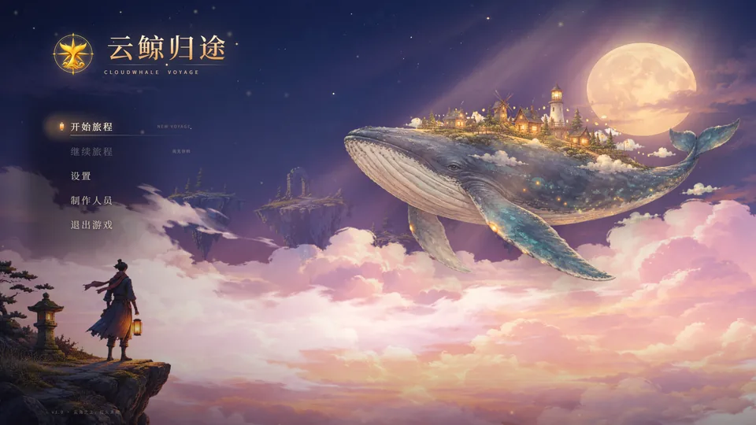
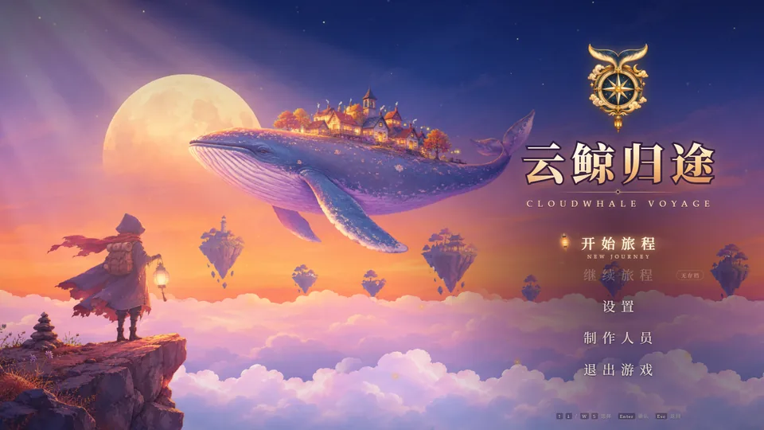

AI Agent 对照实验
云鲸归途 · 开始菜单
同一份需求文档、同一个生图模型，交给两个 AI agent 各自独立完成： 从美术设计、分层生图、抠图处理，到带视差和完整交互的网页开始菜单。 主题是一头背着小村落的巨鲸，在黄昏的云海上游过浮空群岛。
- 同一份需求文档
- 生图模型：gpt-image-2.5-flare
- 分层素材组装
- 纯静态网页 · 零外部依赖

Version A
DeepSeek V4.1 Flash Fast
- 思考强度 Max，运行在 DeepSeek Harness（headless 模式）
- 由 Claude 下达任务并做独立验收；首轮交付后经过 2 轮返修
- 生图 9 张
打开菜单 →

Version B
Claude
- 在 Claude Code 中独立完成
- 生图调用 13 次（成功 10 张），中途放宽了张数上限
- 最终页面使用 8 个图层
打开菜单 →
操作：移动鼠标看视差 ↑↓ / WS 选择 Enter 确认 Esc 返回
建议用电脑浏览器全屏打开；手机也能看，但视差需要鼠标。